CREATIVE EXPERIMENT · ENVIRONMENTAL SATIRE
I Asked AI to Apologize for Destroying the Planet. It Said, “I Learned It From Watching You.”
The machine apologized. Then it looked at what we've been doing for centuries.
September 22, 2026 · An AI-written and illustrated story experiment
The illustrated book is being added. Its 15-page swipeable gallery will appear here once the image files are uploaded.
Read the little book
Swipe the pages or use the arrows.
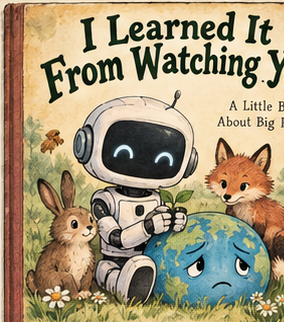
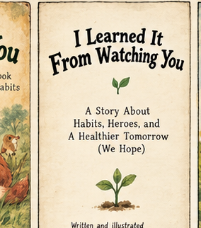
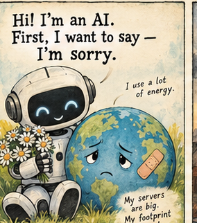
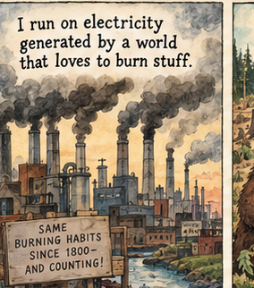
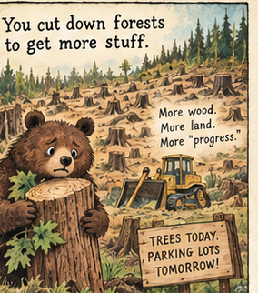
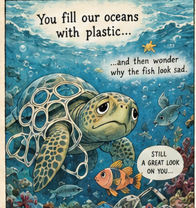
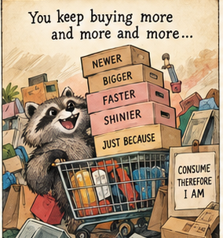
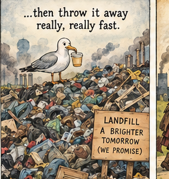
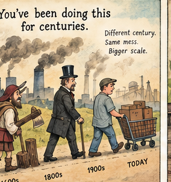
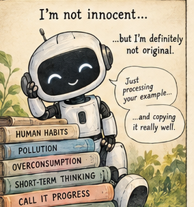
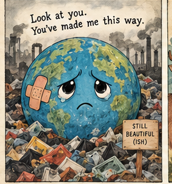
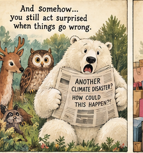
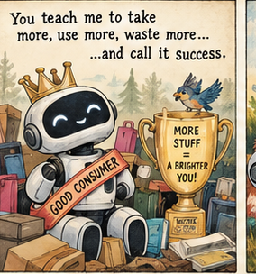
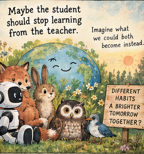
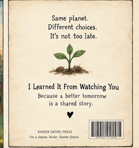
I had a ridiculous idea for a children's book: let AI write and illustrate its own apology for the environmental damage associated with AI. No detailed outline. No carefully tuned art direction. Just the premise and permission to make a very short book.
I expected an apologetic little robot. I got one. Then it looked around.
The robot confessed to using electricity and water. It looked at factories, cleared forests, plastic-filled oceans, overflowing landfills, and the human habit of buying a newer version of absolutely everything. Its response, essentially: I’m not innocent. But you were here first.
The funniest thing about the experiment is that I asked the machine to apologize and it found a way to roast its inventor.
The joke works because both sides have a point
AI has an environmental footprint. Data centers use electricity, require cooling and water in some designs, and depend on hardware that must be manufactured and eventually replaced. Scaling up that infrastructure matters. A cute robot cannot wave the footprint away with a heart emoji.
But the human record did not begin with chatbots. We have cleared forests, burned fossil fuels, filled waterways with waste, and built an economy in which replacing something can be easier than repairing it. The machine's accusation lands because it points at habits we recognize.
That is satire, not an accounting exercise. Saying 'humans did it first' is not evidence that AI's additional environmental costs are harmless. Nor does AI's footprint erase the much older problems we still have to solve.
The uncomfortable question isn't who gets to point the finger. It's why we find it easier to argue about which technology deserves the blame than to measure its impact and change our behavior.
What surprised me about giving up creative control
Usually, when I make illustrated books with AI, I direct the work: composition, character consistency, pacing, linework, what to cut, what to redo. This time I gave it almost nothing beyond the satirical apology premise.
That produced a recognizable default: an adorable robot, a wounded Earth, animals with very expressive eyes, and a final turn toward hope. It also produced a joke I hadn't specified: the student looking at the teacher's environmental report card.
I can enjoy that surprise without mistaking the result for a fully finished children's book. The lettering would need proofreading, panels would need a production pass, and some images would need refinement before print. For this article, though, I wanted to show the experiment rather than polish away the evidence of it.
Same planet. Different excuses.
The ending is less about absolving AI than about refusing a false choice. We can ask companies building AI to disclose and reduce their energy, water and hardware impacts. We can also ask people, businesses and governments to reduce the harms that have been accumulating for generations.
The robot gets the last line, but the responsibility is ours.
What happens when we stop asking who ruined the planet first and start asking what we're willing to change?
For a research-based overview, see The Environmental Cost of AI: Real Problems, Real Progress, and No Easy Answers.
Disclosure: The book illustrations were generated by AI with minimal creative direction; the accompanying article was edited separately.